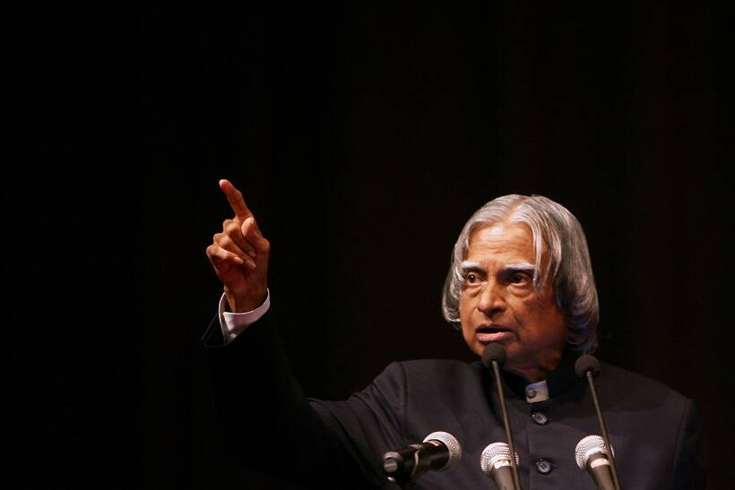
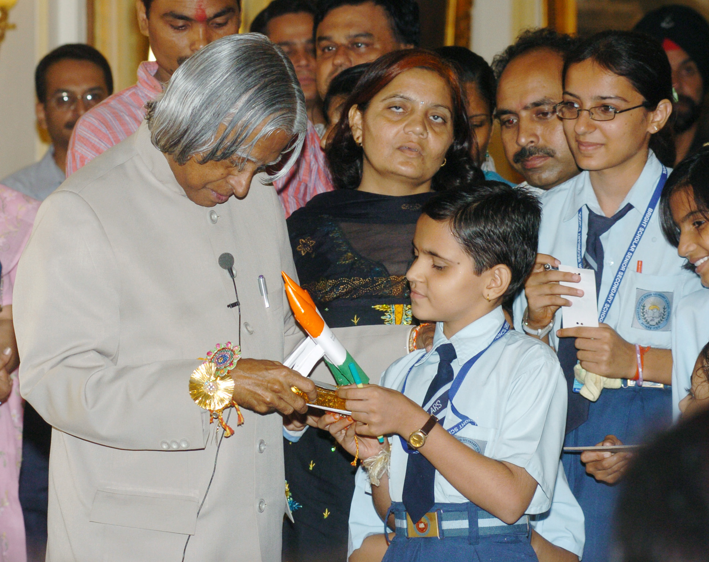
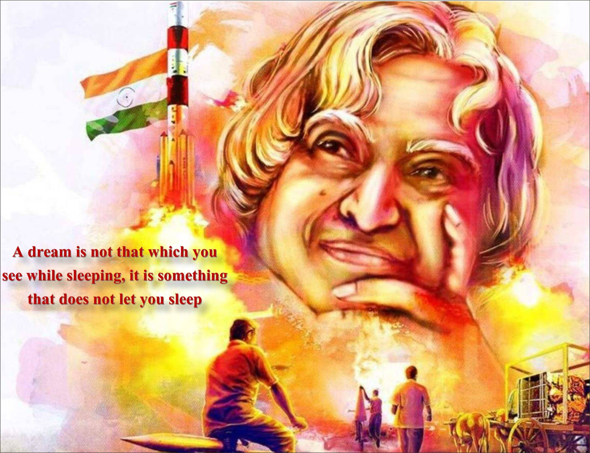
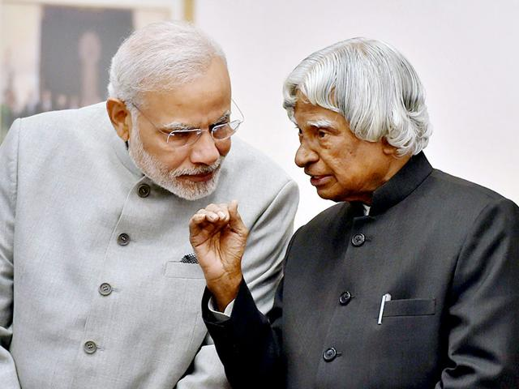
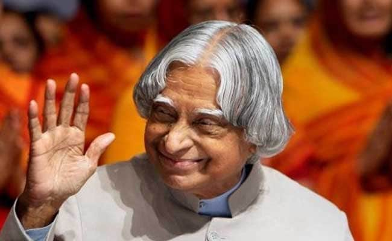
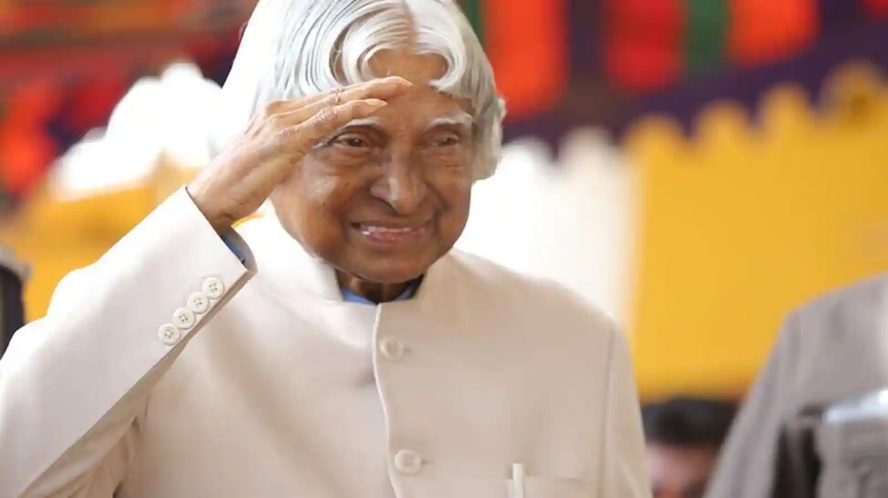
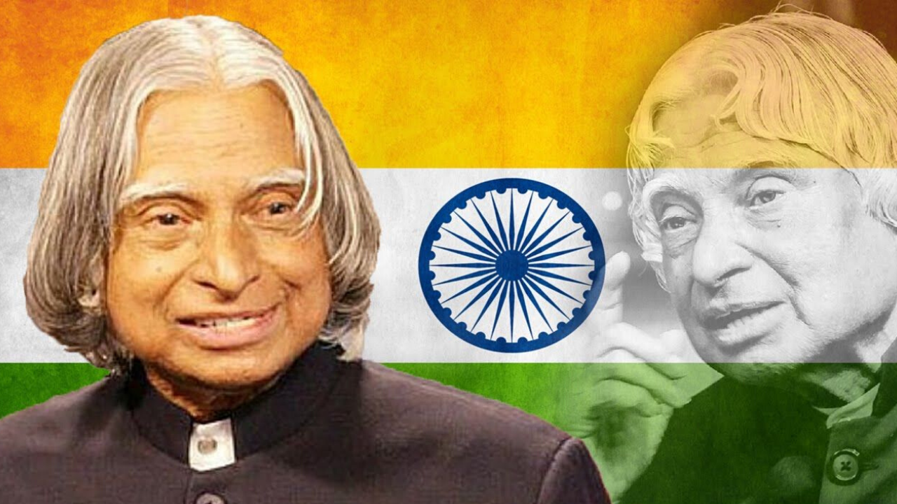

Dr. APJ Abdul Kalam
Aerospace scientist and 11th President of India
1931-2015
" If you want to shine like a sun, first burn like a sun. "

About
- Born on 15th October 1931 at Rameswaram in Tamil Nadu, Dr. Avul Pakir Jainulabdeen Abdul Kalam, graduated in Science from St. Joseph's College, Trichy in 1954 and specialized in Aeronautical Engineering from Madras Institute of Technology (MIT) in 1957. Dr. Kalam is a pioneer in fibre glass technology and led a young team to initiate this effort in ISRO from design, development leading to production of composites rocket motor cases. Dr. Kalam made significant contribution as Project Director to develop India's first indigenous Satellite Launch Vehicle (SLV-3) which successfully injected the Rohini satellite in the near earth orbit in July 1980 and made India an exclusive member of Space Club.
- He was responsible for the evolution of ISRO's launch vehicle programme, particularly the PSLV configuration. After working for two decades in ISRO and mastering launch vehicle technologies, Dr. Kalam took up the responsibility of developing Indigenous Guided Missiles at Defence Research and Development Organisation as the Chief Executive of Integrated Guided Missile Development Programme (IGMDP). He was responsible for the development and operationalisationof AGNI and PRITHVI Missiles and for building indigenous capability in critical technologies through networking of multiple institutions.
- In the bio-medical area, Dr. Kalam along with his team collaborated with medical specialists in the development of Kalam-Raju stent during 1994 - 1996. Kalam-Raju cardiac stent after qualification trials has been fitted to many needy patients.
- He has been awarded with the coveted civilian awards - Padma Bhushan (1981) and Padma Vibhushan (1990) and the highest civilian award Bharat Ratna (1997). He is a recipient of several other awards and Fellow of many professional institutions.
- The Royal Society, UK has awarded Dr Kalam with the King Charles-II Medal for Science and Technology in October 2007. He received the Woodrow Wilson Award in 2008. The Royal Academy of Engineering, London conferred on him the International Medal 2008 in June 2009 at London. The Hoover Board of Awards presented him the Hoover Medal 2008 at New York in April 2009. The Aerospace Historical Society in Collaboration with the Graduate Aerospace Laboratories (GALCIT) at the California Institute of Technology awarded him the 2009 International Von Karman Wings Award in September 2009.
- Dr. Kalam became the 11th President of India on 25th July 2002. After five eventful years he demitted office on 25th July 2007. His focus is on transforming India into a developed nation by 2020. His accent is on constructive networking and excellent human resources for an economically developed, prosperous and peaceful society.
If you have time, you should read more about this incredible human being on his Wikipedia entry.
Gallery









" Great dreams of great dreamers are always transcended "
Never give up on your dreams,
no matter how old you are
no matter where are you today,
Do not give up dreaming
for a better tomorrow.